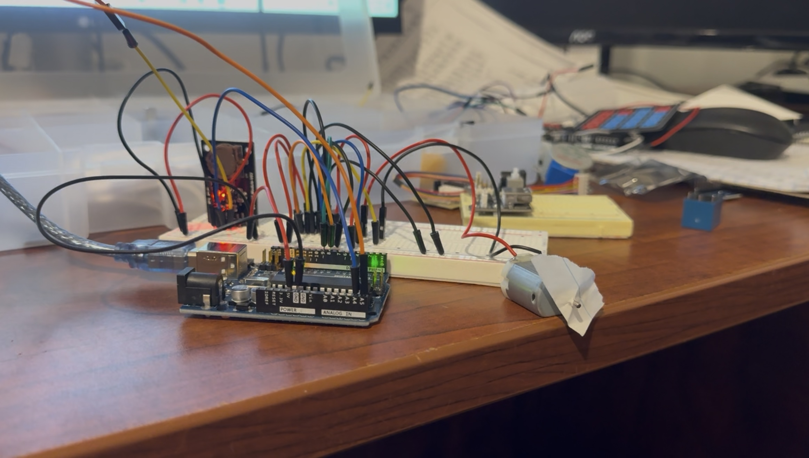

This project is an Arduino-based automated curtain opener that uses a real-time clock module (DS1307), a motor driver (L293D), and a DC motor. It opens and closes your curtains at scheduled times—perfect for morning sunlight or privacy at night.
| Component | Function |
|---|---|
| Arduino Uno R3 | Main microcontroller that runs the code |
| DS1307 RTC Module | Provides real-time clock functionality for scheduled actions |
| L293D Motor Driver | Controls the direction of the DC motor |
| DC Motor | Physically opens and closes the curtains |
The current setup is a working prototype. It's breadboarded for easy testing, and I’ve verified the timed curtain-opening function using the RTC.
I’m going to ditch this design and replace it with the Seeed XIAO nRF52840 and a DRV8833 dual H-bridge motor driver module. I won’t need the RTC module anymore since the Seeed XIAO’s BLE feature lets me sync time directly from my phone—and control it as well. The only thing I need now is a buck converter to step down 9V to 5V, and then I’ll solder everything together into a compact final version.